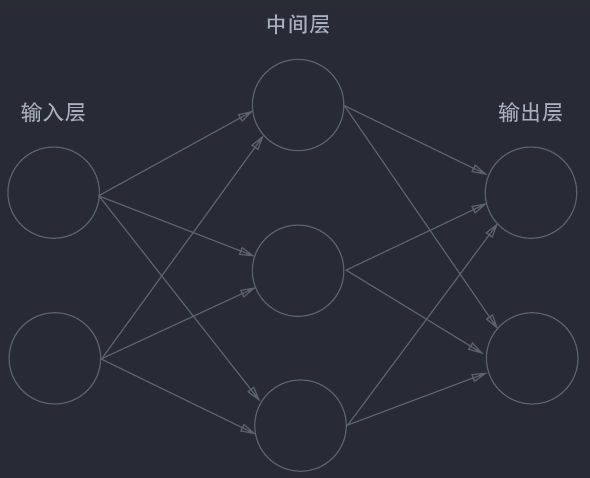

《刻意练习》读书笔记 02——温故
You guess what？我在空余时间把后面的部分peek了一下，觉得它后面信息组织的还是太分散了，而且有点罗嗦，而且太多具体领域的东西，看又看不出个所以然来。决定换个方法学习。
我已经把整本书的大部分都读过了一遍，接下来从头开始再读一遍，但这次的目的是为了能做一个系统的，目标是供实用时参考的总结，把它的只言片语系统地串联起来（因为这书实在有点琐碎，作者是奔着畅销书写的，但难耐它确实有干货），写一篇笔记，以及使用图像来组织起来。
我决定把这篇笔记组织地像网状而非顺序。我决定引入四类元素——Fact，即书中介绍的事实，作为思考的基础（可以依据此建立心智模型）；Should，即实践时应当遵循的准则；How To，具体实践时的指南，How To就像CookBook的Example那样具体；最后是CheckList——对How To的结果的检验清单。
这四类元素组成一个网状的关系——Fact之间会有互相依赖，有更底层的Fact（就像公理），以及依赖其它Fact的Fact（就像推论）；Should依赖Fact；How To依赖Should和Fact，而CheckList依赖How To。我不知道这样是否合适，但具体如何，做了就知道了，我觉得这篇笔记值得花费一个星期去做，它将彻底改变我的练习方式。而且即使它存在错误，它也必定比我当前的练习方式更科学，因为我无数次地失败了，而且现在也仍旧正在失败。AI 推荐增加我自己的“反例库”，写我在哪里没有遵循刻意练习的方式因此失败了，我觉得这是有意义的。
OK，然后是这一篇笔记的内容，实际上只有复习，然后一直在纠结心理表征，其实心理表征并非特别重要，只需要把心理表征当作一个既成事实即可，在实践中它并不唱主角。
温故
首先，复习吧。之前学了什么？
学了身体和大脑的可塑性，通过练习，身体能长肌肉，而大脑能够重新布线，把自己调整到更适应训练的状态，建立适应练习需要的心理结构。练习要突破舒适区，不然无法打破平衡。
有目的的练习和“天真的练习”，有目的的练习有四个特点——具体且可拆分（具体的话就能够引导你去完成它），完成练习时需要专注，力求效果最大化（这里该说是效果最大化还是效益最大化？想了半天还是前者，按我的理解，专注通常会导致获得比本需要的更多的东西）；要能得到反馈（无论是自己的还是他人的，没有反馈就无法确定练习的效果，无法找到目标）；以及要离开舒适区（不离开舒适区的话就无法有进步，因为身体和大脑发现我当前的结构就已经足以完成任务了）
我还是觉得这里的专注写的太不清晰了，不过作者的目的本身也不是深挖这里的有目的的练习，就这样了。
然后，心理表征，按照我建立的心智模型，心理表征是大脑中实际存在的一种结构，它可以当作一个函数，输入是领域特定的，具体的信息，而输出则是相关的高层次的认知；心理表征就是大师口中的“感觉”，“直觉”。
心理表征是极具实践性的——它负责特定领域，完成特定工作，而且它的执行过程是瞬间的，无意识的，就如我们骑自行车，开车不需要为此费心一样，心理表征完成麻烦的部分。
掌握一个领域中足够多的心理表征（当然，质量也要高），就能够成为该领域的大师（或者是作者口中的杰出人物）。
一个题外话是，即使是身体上的锻炼，也会建立相应的心理表征——关于如何正确利用这些肌肉。
有目的的练习可能会遇到无法逾越的瓶颈，这就是因为它可能没有主动迎合大脑的可塑性，没有自为地去尝试建立心理表征——有目的的练习的自在性，可能会建立低质量的，不够系统的心理表征，要用机器学习做比喻的话，就是陷入了局部最优解，缺少泛化能力。（这话可能有些偏颇）
心理表征总是会自动地建立的，我们习惯任何事情这个过程，都会建立相应的心理表征。这心理表征不一定是最科学和合适的，比如我没有系统学过键盘，而是完全自学的，所以我现在虽然能打字，但我的手势是完全错误的，可能在极限速度上比正确的手势差，但却足够满足实践。
而如果建立了关于心理表征的心理表征（我觉得是心智模型），那便对心理表征的建立，即学习和精进事物，便能够有帮助，我们就能从自在走向自为。
有目的的练习虽然会跳出舒适区，但没有自为地去建立心理表征，因此它可能会建立起低质量的，不够系统的心理表征，可能会陷入“局部最优解”（这个比喻可能意外地切中要害），从而丢失泛化能力，因此遇到无法逾越的瓶颈。实际上，心理表征的质量决定技能天花板。
而刻意练习，则尝试自为地，主动地去建立心理表征，这就是刻意练习相较于有目的的练习进步的地方。
AI 给我泼了一盆冷水：刻意练习依赖客观知识体系和评价标准，依赖领域内最佳训练方法，这使得刻意练习可能在艺术这样相对主观的领域上效果不佳——谁能说出学画画有啥最佳训练方法？
继续学吧。
学到这些东西带给了我什么？
大概是祛魅吧，知道了这里不存在魔法。那些专家，无论是马拉松健将，还是围棋高手，还是代码 guru，还是音游大触，还是演奏大师，他们一眼看上去和普通人简直就不像在同一个世界里，但现在我知道，这是因为他们心里建立的系统，高效的心理表征，这里没有什么魔法——大脑本身有这个能力，只是我们总是低估它。
换言之，我也有这个能力。只要我肯沉下心来，并且按照正确的方式去学习，我也能建立同样系统的心理表征，成为领域上的专家。
心理表征的协同？
关于心理表征，应该还有其他方面的问题我还想问的，比如多个心理表征的协同工作甚至融合是可能的吗？
这个答案很可能是是的，而且这种融合很可能代表着所谓的系统和精进，以及，这也让学习的分治法成为可能——我拆解这个一般问题到各个具体问题，然后建立各个具体问题的心理表征，然后期待和主动促进它们的协同工作和融合，得到关于这个一般问题的心理表征，从而对这个领域建立起系统的认识。
比如对画画，我把人体啊透视啊色彩啊光影啊（是的，我知道它们之间有互相联系和先后关系），全都特殊问题特殊处理，建立起相应的心理表征，这是分，而这些心理表征会自动，以及我会尝试促进，进行融合，这是合。分分合合，我就在画画的领域上前进了。
感觉到的事情，我们无法立刻理解它，只有理解了的事情，我们才能更深刻地感受它。这或许就是建立起关于心理表征的心智模型的意义——从自发地建立心理表征到自为地建立心理表征。
是的，我知道我在重复，而我还将继续重复，哈哈哈。
不过这里会提出另一个问题——多个心理表征之间的融合或者协同工作是怎么操作的？它们是并行的，所有心理表征都同时进行工作，生成关于领域信息的不同方面的高层次认知，还是串行的，这个心理表征的输出会连接下一个心理表征的输入？还是说两者皆有？猜测可能是两者皆有。以这个前提考虑，既然存在后者，就说明心理表征也是存在高层和底层之差别的，就像神经网络中不同层捕获不同抽象程度的特征。好吧，越搞越抽象了。
这样，或许多个心理表征会像一个神经网络那样组织——输入是您与特定信息，前面的层的“神经元”是低层次的心理表征，而后面的层是高层次的心理表征，层与层之间连接紧密（或许可以认为是全连接的），而输出则是全面的高层次的认知。只不过，神经网络的结构是预先定义的，而心理表征之间的关系是动态的，发展的。

本博客所有文章除特别声明外，均采用 CC BY-NC-SA 4.0 协议 ，转载请注明出处！